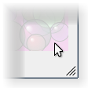

| Home · All Classes · Modules · QSS HELP · QSS 案例 · VER007 HOME |
该QSizeGrip类提供了一个大小调整手柄大小调整顶层窗口。More...
继承QWidget。
该QSizeGrip类提供了一个大小调整手柄大小调整顶层窗口。
这个小工具的工作方式类似于标准的Windows调整大小手柄。在X11版本的大小调整手柄通常的工作方式不同从所提供的系统，如果X11窗口管理器不支持必要的现代后ICCCM规范之一。
把这个小工具的任何地方在一个widget树，用户可以用它来调整顶层窗口或任何部件与Qt.SubWindow标志设置。一般情况下，这应该是在右下角的角落。需要注意的是QStatusBar已经使用这个小工具，所以如果你有一个状态栏（例如，你使用QMainWindow） ，那么你就不需要显式地使用这个小工具。
在某些平台上的大小手柄自动隐藏自己当窗口显示全屏或最大化。
|  | A size grip widget at the bottom-right corner of a main window, shown in the Plastique widget style. |
该QSizeGrip类继承QWidget并重新实现了mousePressEvent()和mouseMoveEvent()功能特点调整大小的功能，而paintEvent()功能呈现大小手柄部件。
该parent的说法，如果不是没有，原因self通过Qt的，而不是PyQt的拥有。
构造一个调整大小角落的特定子widgetparent。
从重新实现QObject.event（ ） 。
从重新实现QObject.eventFilter（ ） 。
从重新实现QWidget.hideEvent（ ） 。
从重新实现QWidget.mouseMoveEvent（ ） 。
重新调整包含此插件的顶级窗口部件。鼠标移动事件传递的event参数。
从重新实现QWidget.mousePressEvent（ ） 。
接收到鼠标按下的事件窗口小部件，和素数的大小调整操作。鼠标按下事件传递的event参数。
从重新实现QWidget.mouseReleaseEvent（ ） 。
从重新实现QWidget.moveEvent（ ） 。
从重新实现QWidget.paintEvent（ ） 。
绘制调整大小的抓地力。
调整握把通常呈现为在右下角的小斜线纹理的线条。该漆事件被传递的event参数。
从重新实现QWidget.setVisible（ ） 。
从重新实现QWidget.showEvent（ ） 。
从重新实现QWidget.sizeHint（ ） 。
| PyQt 4.10.3 for X11 | Copyright © Riverbank Computing Ltd and Nokia 2012 | Qt 4.8.5 |